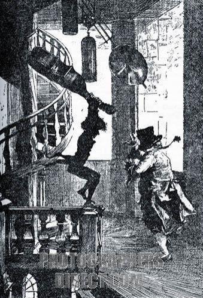
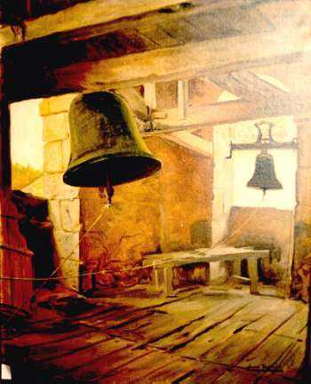

|  |  |
" ... Todas las gentes que poseen sinecuras son más o menos respetadas, y como el campanero de Vondervotteimittiss tiene la más perfecta de las sinecuras, es el más perfectamente respetado de todos los hombres del mundo. Es el principal dignatario de la villa, y los mismos cerdos lo miran con un sentimiento de reverencia. Los faldones de su levita son mucho más largos; su pipa, las hebillas de sus zapatos, sus ojos y su barriga, mucho más, grandes que los de cualquier otro señor del pueblo; y, en cuanto a su papada, no sólo es doble, sino triple...
... Era un viejo dicho de los más prudentes habitantes que «nada bueno puede venir del otro lado de las colinas»; y en verdad parece que las palabras tuvieron algo de proféticas. Faltaban anteayer cinco minutos para mediodía cuando apareció un objeto de aspecto muy extraño en lo alto de la colina del este. Semejante suceso atrajo, por supuesto, la atención universal, y cada pequeño señor sentado en un sillón con asiento de cuero volvió uno de sus ojos con asombrada consternación hacia el fenómeno, mientras mantenía el otro en el reloj de la torre... leer más"
Edgar Allan Poe nos ofrece un relato que nos adentra a la fantasia, lleno de entretenimiento, nos atrapa en la trama y nos hace vivir la historia desde su perspectiva.